Prof. Dinesh Shivratan Bhutada
Program Director & Associate Professor
Environmental Engineering, Advanced Separation processes, Material science, Energy
Program Director & Associate Professor
Environmental Engineering, Advanced Separation processes, Material science, Energy
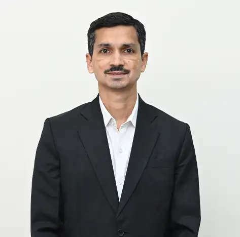
Program Coordinator (Chemical) & Assistant Professor
Flow Assurance, Biofuels, Biopolymers, Education

Program Coordinator (MS & E) & Associate Professor
Green Technology, Polymer Materials and Structure Property Relationship, Rheology of polymeric systems, Microwave Assisted Reactions, Natural Waste based Product Development
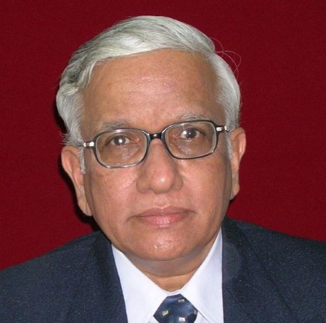
Professor Emeritus and Director Research
Prof. Dr. Radhakrishnan Subramaniam is dedicated to cultivating strong foundational knowledge and fostering a deep interest in the subject among students. He strives to create an academic environment that encourages innovative thinking and…
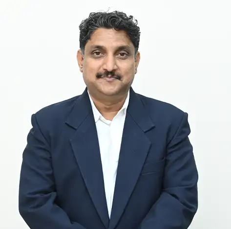
Associate Professor
Dr. Vikrant Devidas Gaikwad is a distinguished academic leader with over 26 years of experience in advancing educational excellence and institutional growth. As Dean–Academics at Dr. Vishwanath Karad MIT World Peace University, he has…
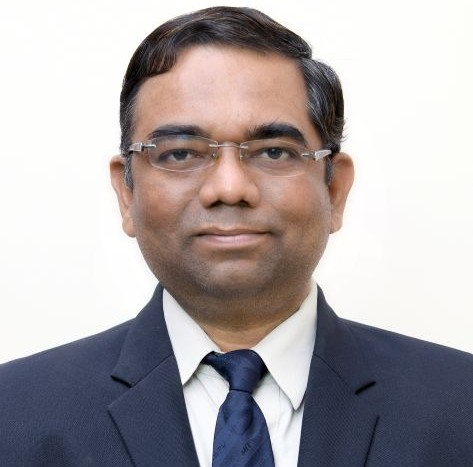
Associate Professor
1. Affordable production of Green Hydrogen through thermochemical as well as bio-digetion routes 2. BioCNG from mixed agro-waste, particularly from millet crop residues 3. Delayed release Smart Bio-fertilizers 4. Health devices for Green…
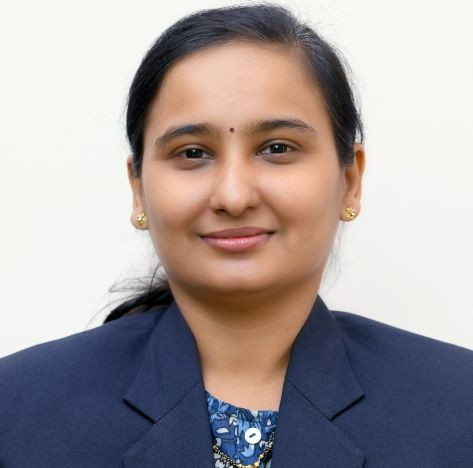
Assistant Professor
Nanomaterials, Catalysis, Biofuels, Flow through Porous Media, Energy
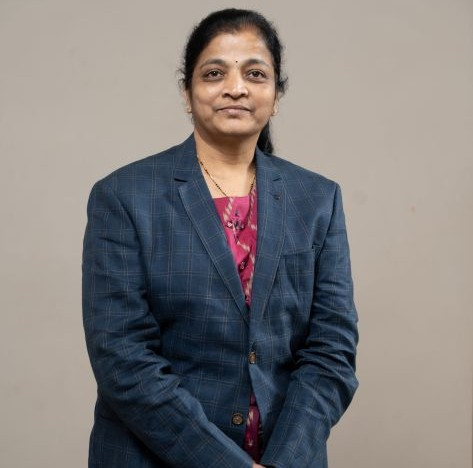
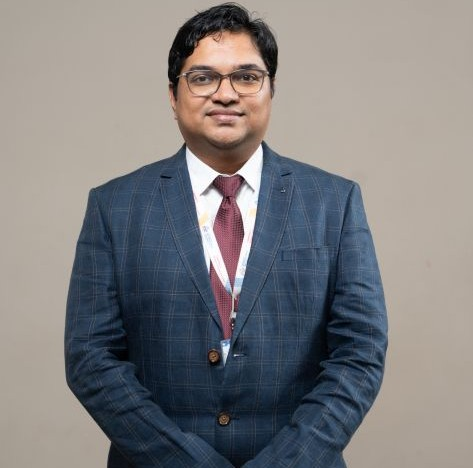
Assistant Professor
1. Energy Storage & Conversion – Development of high-performance lithium-ion and solid-state batteries, supercapacitors, and fuel cells with advanced electrode materials and electrocatalysts. 2. Nanomaterials & Functional Coatings –…
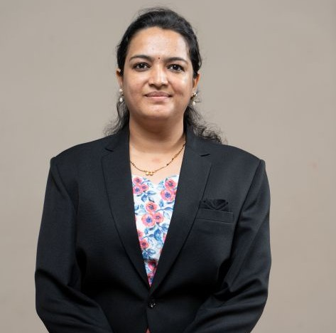
Assistant Professor
Dr. Rupali R. Sonolikar is an Assistant Professor with three years of teaching experience. Research interest includes Computational Fluid Dynamics study of granular material in different various engineering systems and the application of…
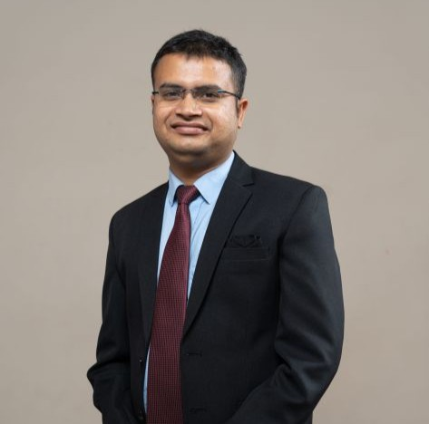
Assistant Professor
Anant Srivastava is committed to creating a student-centric learning environment that encourages independent thinking, self-confidence, curiosity, and lifelong learning. His teaching philosophy focuses on helping students build strong…
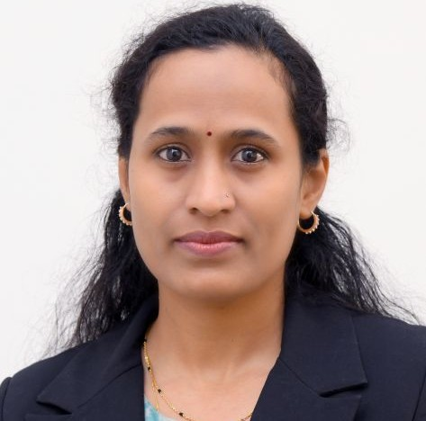
Assistant Professor
Adsorption, membrane separation, polymer composite, green composite, waste management, sustainable processes and renewable energy
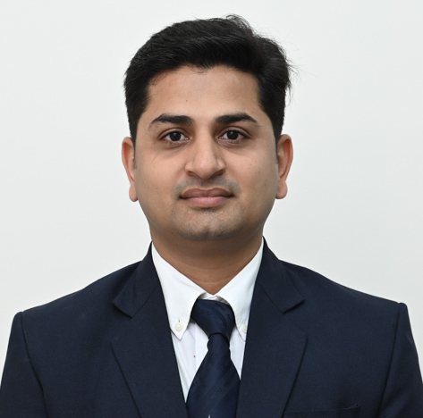
Assistant Professor
Separation Processes, Bio-energy (Biofuels, Biodiesel Production, Biochar), Wastewater Treatment, Photocatalysis and Ultrasound